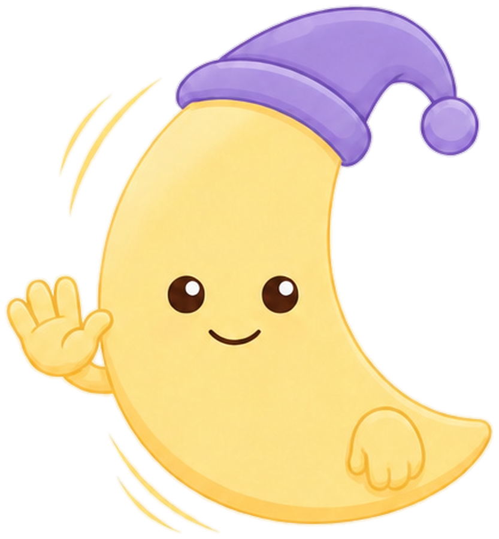

Para que al sonar ocupe toda la pantalla (también si estás usando el móvil), Android pide el permiso «Mostrar encima de otras aplicaciones». Actívalo en la pantalla que se abre y vuelve.
Luna da consejos generales sobre el sueño; no es un médico. Tus preguntas y los números de tus noches se envían a la IA para contestarte (nunca las grabaciones).
Para no volver a dormirte: cuando suena, la alarma no se apaga hasta que haces el reto (mientras lo haces, el volumen baja). Posponer funciona igual. Lo que elijas aquí se pone a todas las alarmas; luego puedes cambiarlo en cada una (en Alarmas, «Reto alarma ?»). Si no activas ninguno, se apaga con el botón.
Amable Sleep · todo se guarda en este móvil
Funciona mientras monitoreas la noche. La voz suena por los auriculares Bluetooth, para no despertar a nadie (🎧 cárgalos antes: al 100 % duran unas 4 horas). Si duermes solo, también puede sonar por el altavoz.
Funciona sin internet y con la pantalla apagada. En iPhone el volumen se ajusta con los botones del móvil.
Ojo: con la pantalla apagada YouTube suele pararse (salvo con YouTube Premium) y los anuncios pueden despertarte. Los sonidos de aquí arriba no tienen ese problema.
¿Alguna está mal clasificada? Toca su etiqueta para cambiarla. Para marcar un tramo entero, mantén pulsado un cuadrito.

Amable Sleep no puede activar estos modos por ti: los móviles no dejan que una app web los cambie.
Hay luz y movimiento desde hace un rato: parece que ya te has levantado.
Pulsa el botón y ronca de mentira (o habla) durante 6 segundos. Al acabar suena un pitido y te digo qué he oído.